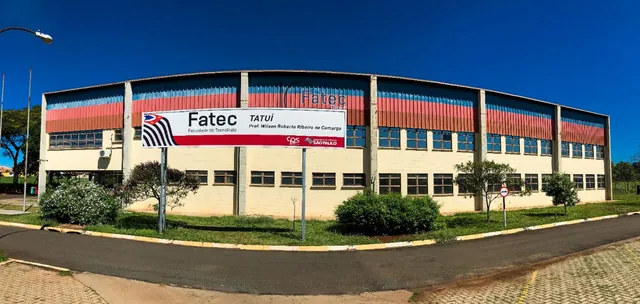

FATEC: faculdade pública de tecnologia
As Faculdades de Tecnologia do Estado de São Paulo (Fatecs) oferecem cursos superiores de tecnologia, gratuitos, que dão diploma de graduação. Para entrar, você faz o Vestibular Fatec, aplicado duas vezes por ano.

Resumo
- Quem mantém
- Centro Paula Souza, do Governo do Estado de São Paulo
- Quantas faculdades
- 83 Fatecs pelo estado (dezembro de 2025)
- Custo
- Gratuito; o vestibular cobra taxa de inscrição
- A prova
- Questões de múltipla escolha e uma redação, em 5 horas
- Quem pode
- Quem terminou o ensino médio (ou termina até a matrícula)
O que é um curso superior de tecnologia
É uma graduação, como um bacharelado, mas mais focada numa área do mercado de trabalho. Quem se forma é tecnólogo e pode seguir para pós-graduação. As Fatecs têm mais de 100 opções de curso, presenciais e a distância.
Cada Fatec oferece cursos diferentes, em turnos diferentes. Veja onde fica cada uma e o que ela oferece em Onde estudar, no site do Centro Paula Souza.
Como é o Vestibular Fatec
A prova dura 5 horas e tem questões de múltipla escolha (cinco alternativas) e uma redação. As questões cobram o conteúdo do ensino médio: português, matemática, inglês, biologia, física, química, história, geografia, raciocínio lógico e questões multidisciplinares. Até 2024 eram 54 questões; a partir de 2025, as provas passaram a ter 60.
- Nota do Enem: o candidato pode informar a nota de edições recentes do Enem, que entra no cálculo da nota final conforme as regras do Manual do Candidato.
- Pontuação acrescida: +10% para quem cursou todo o ensino médio em escola pública, +3% para quem se declara afrodescendente e +13% para quem se encaixa nos dois casos.
- Provão Paulista: parte das vagas é preenchida pelo Provão Paulista, a avaliação seriada dos estudantes do ensino médio da rede pública paulista.
A fórmula da nota final, as datas, a taxa e as regras de cada edição estão no Manual do Candidato, no site oficial. No Treineiros, o resultado mostra só a parte objetiva, porque a redação não entra no simulado.
Como treinar no Treineiros
Aqui estão as provas oficiais do Vestibular Fatec desde 2017, com o gabarito oficial e a correção comentada de cada questão. Para praticar a escrita, use a página de redação. No 2º semestre de 2020, em 2021 e no 1º semestre de 2022 não houve prova: por causa da pandemia, a seleção foi pela análise do histórico escolar.
Links oficiais
- Vestibular Fatec: inscrições, Manual do Candidato e resultados.
- Calendário do Vestibular: datas de inscrição, prova e resultado.
- Dúvidas frequentes, respondidas pela organização.
- Fatecs no site do Centro Paula Souza: cursos e unidades.